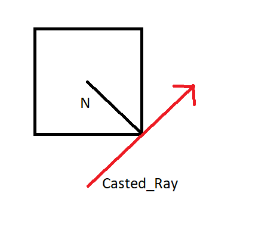
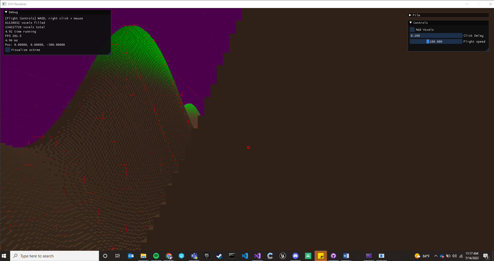
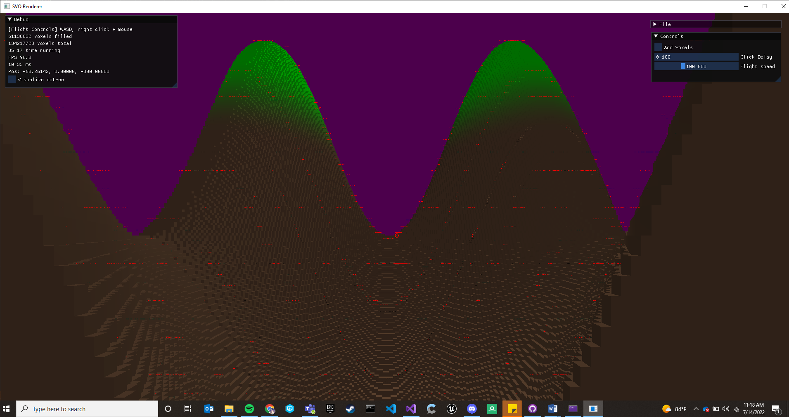
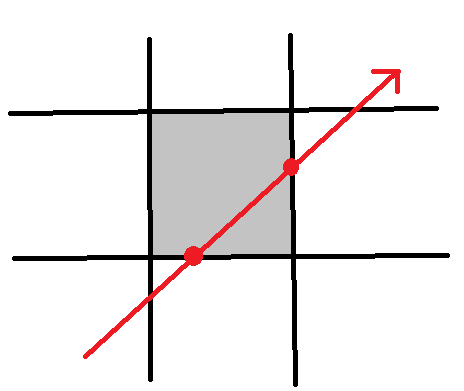
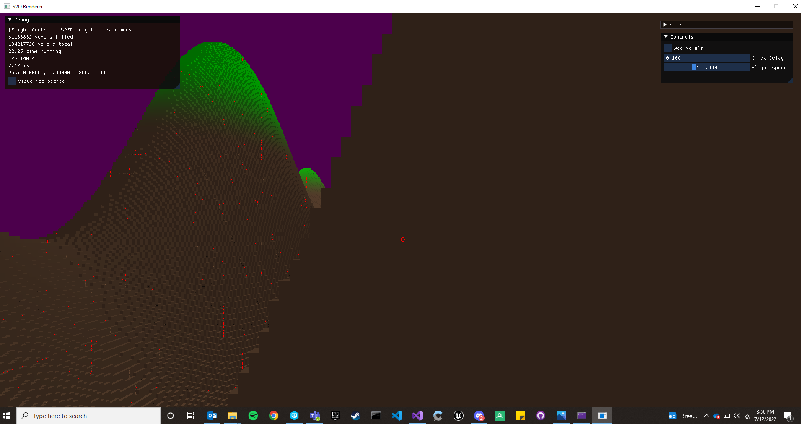

SVO Ray Tracer Update #5 - Improving Traversal to Remove Artifacts
Project's GitHub RepoThe Old GetNextVoxelFunction
The outline of my traversal algorithm was taken from an NVIDIA paper (described in previous updates). This algorithm, however, was in pseudo-code and left many of the specific details as a black box. Specifically, the function that determined the next voxel to move to based on the ray’s exit point was something I wrote myself without guidance. The idea of my implementation was to determine which side of the voxel the ray exited on. This would imply the next voxel the ray was entering. I don’t even consider the direction of the ray, just the normal of the face the ray exits on. This works perfectly fine in all cases EXCEPT corners and edges. The calculated normal on corners and edges actually implies the ray should travel to the diagonal voxel, which isn’t desired. To solve this, I let the algorithm arbitrarily pick which direction to take. This meant that sometimes it would pick a direction that didn’t make sense with direction of a ray. Observe the following case:

As you can see, (assuming left hand coordinate system) the algorithm may choose -Y instead of +X which doesn’t make sense when you consider the ray’s actual direction. To solve this, I added a check that made sure the face it chose coincided with the ray’s direction.
Despite all my efforts, though, I was still seeing artifacts occasionally. The artifacts rendered when the traversal algorithm determined there was no valid voxel to move and it had not exited the root node. They were infrequent enough to not disturb the final image and making them render as black made them even less discernable. I don’t think anybody ever noticed them. They definitely bugged me though, and it was time to get rid of them!


Traversal artifacts (rendered as red)The New GetNextVoxel Function
I was never super happy with my implementation of GetNextVoxel. It was hacky and required calculating a normal whenever you wanted you wanted to get the next voxel. I decided to read up on common voxel traversals to see how they determined the next voxel to move to. The paper A Fast Voxel Traversal Algorithm for Ray Tracing (Amanatides and Woo) proved the most useful for me. The way they decide which voxel to step to next is actually determined in the ray trace function itself. Recall that we intersect the max and min planes for a given voxel on the X, Y, and Z axis when in the ray trace box function. These minimum of these max plane intersections actually tells us which face of the voxel the ray exits on. This is intuitive if you see an image:

2D demonstration of min/max plane intersectionsAs you can see the ray hits the max X plane before it hits the max Y plane. Thus, we know the ray exits the voxel on one of the X planes. Determining which one is implied by the direction of the ray on that given dimension. Since the ray has a negative X direction, it can be deduced that the ray exits on the positive X face.
After implementing this new GetNextVoxel function the artifacts were reduced slightly, but were still present.

Artifacts after new GetNextVoxel function was implementedOn corners/edges, however, two planes were actually tied for the minimum T value. I accounted for this by allowing the traversal to choose the other valid plane if it meant the ray would traverse into a voxel rather than exiting the root. With this change I was now back to the previous number of artifacts! It was evident these artifacts were occurring from something other than my GetNextVoxel function. This was still a win, however, because the new GetVoxelFunction reduced complexity and required less instructions overall.
While exploring the traversal code again I noticed when popping up the stack of root voxels (upon exiting a child root) I wasn’t recalculating the exit plane. This was clearly going to cause issues because the exit plane of a child voxel and root voxel could differ greatly. After a few lines of code to recalculate this, the artifacts were finally gone.
After recalculating the exit plane upon popping up the root voxel stack (no artifacts!)